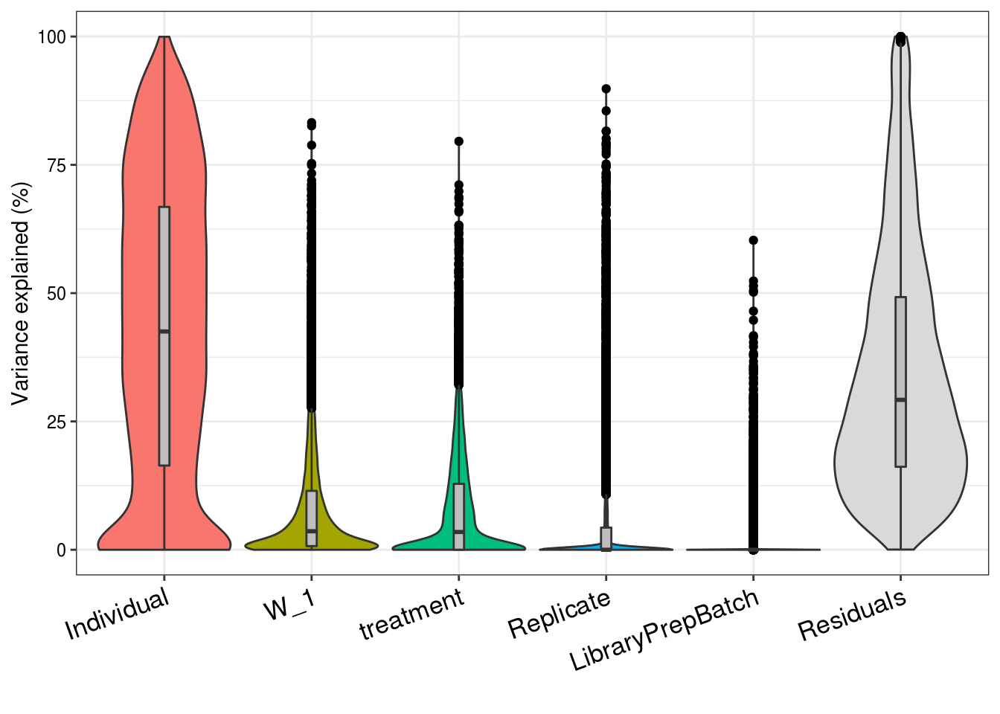
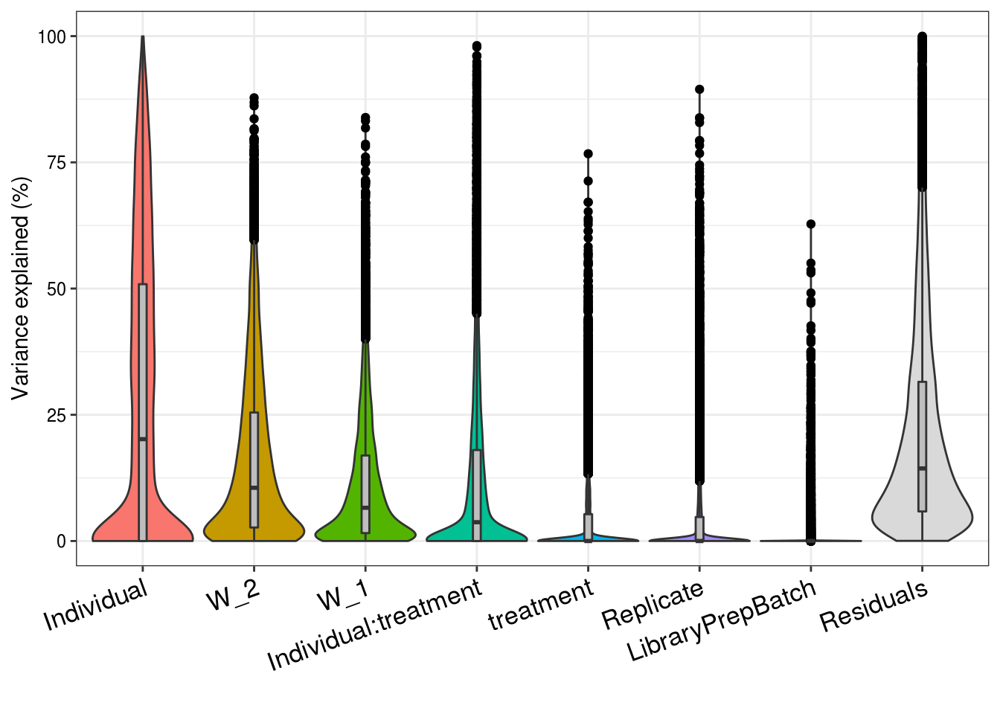

Partition Variance
Anthony Hung
2020-04-26
Last updated: 2020-05-21
Checks: 6 1
Knit directory: OAStrain/
This reproducible R Markdown analysis was created with workflowr (version 1.6.2). The Checks tab describes the reproducibility checks that were applied when the results were created. The Past versions tab lists the development history.
The R Markdown file has unstaged changes. To know which version of the R Markdown file created these results, you’ll want to first commit it to the Git repo. If you’re still working on the analysis, you can ignore this warning. When you’re finished, you can run wflow_publish to commit the R Markdown file and build the HTML.
Great job! The global environment was empty. Objects defined in the global environment can affect the analysis in your R Markdown file in unknown ways. For reproduciblity it’s best to always run the code in an empty environment.
The command set.seed(20191127) was run prior to running the code in the R Markdown file. Setting a seed ensures that any results that rely on randomness, e.g. subsampling or permutations, are reproducible.
Great job! Recording the operating system, R version, and package versions is critical for reproducibility.
Nice! There were no cached chunks for this analysis, so you can be confident that you successfully produced the results during this run.
Great job! Using relative paths to the files within your workflowr project makes it easier to run your code on other machines.
Great! You are using Git for version control. Tracking code development and connecting the code version to the results is critical for reproducibility.
The results in this page were generated with repository version 6cfbae9. See the Past versions tab to see a history of the changes made to the R Markdown and HTML files.
Note that you need to be careful to ensure that all relevant files for the analysis have been committed to Git prior to generating the results (you can use wflow_publish or wflow_git_commit). workflowr only checks the R Markdown file, but you know if there are other scripts or data files that it depends on. Below is the status of the Git repository when the results were generated:
Ignored files:
Ignored: .RData
Ignored: .Rhistory
Ignored: .Rproj.user/
Ignored: data/ANT1_2.rds
Ignored: data/Combined.common.allGenes_noliver.rds
Ignored: data/Combined_singlecell_data.rds
Ignored: data/Combined_singlecell_data_allGenes.rds
Ignored: data/Combined_singlecell_data_allGenes_noliver.rds
Ignored: data/Combined_singlecell_data_allGenes_normalized.rds
Ignored: data/Combined_singlecell_data_first.rds
Ignored: data/Combined_singlecell_data_noliver.rds
Ignored: data/DE_results.rds
Ignored: data/GoMresults.rds
Ignored: data/GoMresultsk3.rds
Ignored: data/GoMresultsk4.rds
Ignored: data/GoMresultsk5.rds
Ignored: data/GoMresultsk6.rds
Ignored: data/GoMresultsk7.rds
Ignored: data/GoMresultsk8.rds
Ignored: data/HumanLiverSeurat.rds
Ignored: data/RUVsCPM.rds
Ignored: data/RUVsOut.rds
Ignored: data/filtered_counts.rds
Ignored: data/gom_sup3.rds
Ignored: data/gom_sup_3.rda
Ignored: data/gom_sup_noiPSCChond_3.rda
Ignored: data/humanLiverSubset_hepatocytes.rds
Ignored: data/merged_topic_fit_7_classtpx_omega_fix_adMSC_ENCODEChond.rda
Ignored: data/merged_topic_fit_7_classtpx_omega_fix_allMSC_ENCODEChond.rda
Ignored: data/merged_topic_fit_7_classtpx_omega_fix_bmMSC1_ENCODEChond.rda
Ignored: data/merged_topic_fit_7_classtpx_omega_fix_bmMSC2_ENCODEChond.rda
Ignored: data/merged_topic_fit_8_classtpx_omega_fix_adMSC_ENCODEChond.rda
Ignored: data/merged_topic_fit_8_classtpx_omega_fix_allMSC_ENCODEChond.rda
Ignored: data/merged_topic_fit_8_classtpx_omega_fix_bmMSC1_ENCODEChond.rda
Ignored: data/merged_topic_fit_8_classtpx_omega_fix_bmMSC2_ENCODEChond.rda
Ignored: data/norm_filtered_counts.rds
Ignored: data/norm_filtered_counts_RLE.rds
Ignored: data/raw_counts_relabeled.rds
Ignored: data/sclabels_noliver.rda
Ignored: output/ANT1.2.rds
Untracked files:
Untracked: .RDataTmp
Unstaged changes:
Modified: analysis/boxplots_correlations.Rmd
Modified: analysis/enrichment_DE.Rmd
Modified: analysis/partition_variance.Rmd
Modified: data/Sample.info.RNAseq.reordered.csv
Note that any generated files, e.g. HTML, png, CSS, etc., are not included in this status report because it is ok for generated content to have uncommitted changes.
These are the previous versions of the repository in which changes were made to the R Markdown (analysis/partition_variance.Rmd) and HTML (docs/partition_variance.html) files. If you’ve configured a remote Git repository (see ?wflow_git_remote), click on the hyperlinks in the table below to view the files as they were in that past version.
| File | Version | Author | Date | Message |
|---|---|---|---|---|
| Rmd | 51cceef | Anthony Hung | 2020-05-12 | box plot of pairwise correlations |
| html | 51cceef | Anthony Hung | 2020-05-12 | box plot of pairwise correlations |
Use the variancePartition package to quantify the percent of variance in the data explained by biological/technical factors
Load packages and normalized data
library(variancePartition)Loading required package: ggplot2Loading required package: limmaLoading required package: foreachLoading required package: scalesLoading required package: BiobaseLoading required package: BiocGenericsLoading required package: parallel
Attaching package: 'BiocGenerics'The following objects are masked from 'package:parallel':
clusterApply, clusterApplyLB, clusterCall, clusterEvalQ,
clusterExport, clusterMap, parApply, parCapply, parLapply,
parLapplyLB, parRapply, parSapply, parSapplyLBThe following object is masked from 'package:limma':
plotMAThe following objects are masked from 'package:stats':
IQR, mad, sd, var, xtabsThe following objects are masked from 'package:base':
anyDuplicated, append, as.data.frame, basename, cbind,
colnames, dirname, do.call, duplicated, eval, evalq, Filter,
Find, get, grep, grepl, intersect, is.unsorted, lapply, Map,
mapply, match, mget, order, paste, pmax, pmax.int, pmin,
pmin.int, Position, rank, rbind, Reduce, rownames, sapply,
setdiff, sort, table, tapply, union, unique, unsplit, which,
which.max, which.minWelcome to Bioconductor
Vignettes contain introductory material; view with
'browseVignettes()'. To cite Bioconductor, see
'citation("Biobase")', and for packages 'citation("pkgname")'.
Attaching package: 'variancePartition'The following object is masked from 'package:limma':
classifyTestsFlibrary(RUVSeq)Loading required package: EDASeqLoading required package: ShortReadLoading required package: BiocParallelLoading required package: BiostringsLoading required package: S4VectorsLoading required package: stats4
Attaching package: 'S4Vectors'The following object is masked from 'package:base':
expand.gridLoading required package: IRangesLoading required package: XVector
Attaching package: 'Biostrings'The following object is masked from 'package:base':
strsplitLoading required package: RsamtoolsLoading required package: GenomeInfoDbLoading required package: GenomicRangesLoading required package: GenomicAlignmentsLoading required package: SummarizedExperimentLoading required package: DelayedArrayLoading required package: matrixStats
Attaching package: 'matrixStats'The following objects are masked from 'package:Biobase':
anyMissing, rowMedians
Attaching package: 'DelayedArray'The following objects are masked from 'package:matrixStats':
colMaxs, colMins, colRanges, rowMaxs, rowMins, rowRangesThe following object is masked from 'package:Biostrings':
typeThe following objects are masked from 'package:base':
aperm, apply, rowsumLoading required package: edgeRlibrary(edgeR)
library(dplyr)
Attaching package: 'dplyr'The following object is masked from 'package:ShortRead':
idThe following objects are masked from 'package:GenomicAlignments':
first, lastThe following object is masked from 'package:matrixStats':
countThe following objects are masked from 'package:GenomicRanges':
intersect, setdiff, unionThe following object is masked from 'package:GenomeInfoDb':
intersectThe following objects are masked from 'package:Biostrings':
collapse, intersect, setdiff, setequal, unionThe following object is masked from 'package:XVector':
sliceThe following objects are masked from 'package:IRanges':
collapse, desc, intersect, setdiff, slice, unionThe following objects are masked from 'package:S4Vectors':
first, intersect, rename, setdiff, setequal, unionThe following object is masked from 'package:Biobase':
combineThe following objects are masked from 'package:BiocGenerics':
combine, intersect, setdiff, unionThe following objects are masked from 'package:stats':
filter, lagThe following objects are masked from 'package:base':
intersect, setdiff, setequal, union#raw(filtered)
counts_upperquartile <- readRDS("data/filtered_counts.rds")
#normalized
filtered_upperquartile <- readRDS("data/norm_filtered_counts.rds")
filtered_RLE <- readRDS("data/norm_filtered_counts_RLE.rds")
#metadata
sampleinfo <- readRDS("data/Sample.info.RNAseq.reordered.csv")Additional RUVseq analysis: Using top 100 (~1% of the genes considered) LEAST variable genes as control genes to get an output of W variables
#input data consists of raw filtered data (filtered for lowly expressed genes)
#compute CV (stdev/mean) and rank from least to most; pick 100 least variable
cv <- apply(counts_upperquartile, 1, function(x) sd(x)/mean(x))
least_var_genes <- names(head(sort(cv), 100))#The RUVSeq vignette loads raw counts and uses the RUVSeq package to filter and normalize data (upper quantile normalization) before performing RUVg.
#Use RUVg
#load data into expressionset
set <- newSeqExpressionSet(as.matrix(counts_upperquartile$counts),phenoData = data.frame(sampleinfo, row.names=colnames(counts_upperquartile$counts)))
setSeqExpressionSet (storageMode: lockedEnvironment)
assayData: 10447 features, 17 samples
element names: counts, normalizedCounts, offset
protocolData: none
phenoData
sampleNames: 18855_3_S 19160_3_S ... 18855_3_U (17 total)
varLabels: Sample_ID Individual ... LibSize (8 total)
varMetadata: labelDescription
featureData: none
experimentData: use 'experimentData(object)'
Annotation: #normalization
set <- betweenLaneNormalization(x = set, which = "upper")
#run RUVg
set1 <- RUVg(set, least_var_genes, k=1)
sample_info <- pData(set1)
sample_info$Replicate <- as.factor(sample_info$Replicate)
sample_info$LibraryPrepBatch <- as.factor(sample_info$LibraryPrepBatch)
#fit with W1 and W2
set1_W2 <- RUVg(set, least_var_genes, k=2)
sample_info_W2 <- pData(set1_W2)
sample_info_W2$Replicate <- as.factor(sample_info_W2$Replicate)
sample_info_W2$LibraryPrepBatch <- as.factor(sample_info_W2$LibraryPrepBatch)Specify variables to consider
# Specify variables to consider
form <- ~ (1|Individual) + (1|treatment) + (1|Replicate) + (1|LibraryPrepBatch) + (1|Individual:treatment) + W_1
form_no_interaction <- ~ (1|Individual) + (1|treatment) + (1|Replicate) + (1|LibraryPrepBatch) + W_1
# W2
form_W2 <- ~ (1|Individual) + (1|treatment) + (1|Replicate) + (1|LibraryPrepBatch) + (1|Individual:treatment) + W_1 + W_2
form_no_interaction_W2 <- ~ (1|Individual) + (1|treatment) + (1|Replicate) + (1|LibraryPrepBatch) + W_1 + W_2Run function
# Fit model and extract results
# 1) fit linear mixed model on gene expression
# If categorical variables are specified,
# a linear mixed model is used
# If all variables are modeled as fixed effects,
# a linear model is used
# each entry in results is a regression model fit on a single gene
# 2) extract variance fractions from each model fit
# for each gene, returns fraction of variation attributable
# to each variable
# Interpretation: the variance explained by each variables
# after correcting for all other variables
varPart <- fitExtractVarPartModel( filtered_RLE, form, sample_info )Dividing work into 100 chunks...
Total: 33 s# sort variables (i.e. columns) by median fraction
# of variance explained
vp <- sortCols(varPart)
# Bar plot of variance fractions for the first 10 genes
plotPercentBars( vp[1:10,] )
| Version | Author | Date |
|---|---|---|
| 51cceef | Anthony Hung | 2020-05-12 |
# violin plot of contribution of each variable to total variance
plotVarPart( vp )
| Version | Author | Date |
|---|---|---|
| 51cceef | Anthony Hung | 2020-05-12 |
#no interaction
varPart <- fitExtractVarPartModel( filtered_RLE, form_no_interaction, sample_info )Dividing work into 100 chunks...
Total: 29 svp <- sortCols(varPart)
plotVarPart( vp )
| Version | Author | Date |
|---|---|---|
| 51cceef | Anthony Hung | 2020-05-12 |
#W2
varPart <- fitExtractVarPartModel( filtered_RLE, form_W2, sample_info_W2 )Dividing work into 100 chunks...
Total: 29 svp <- sortCols(varPart)
plotVarPart( vp )
| Version | Author | Date |
|---|---|---|
| 51cceef | Anthony Hung | 2020-05-12 |
#no interaction
varPart <- fitExtractVarPartModel( filtered_RLE, form_no_interaction_W2, sample_info_W2 )Dividing work into 100 chunks...
Total: 29 svp <- sortCols(varPart)
plotVarPart( vp )
| Version | Author | Date |
|---|---|---|
| 51cceef | Anthony Hung | 2020-05-12 |
Looking at treatment
# load gene annotations
gene_anno <- read.delim("data/gene-annotation.txt",
sep = "\t")
# looking at genes that have majority var explained by treatment
sorted_treatment <- varPart[order(varPart$treatment, decreasing=TRUE),]
plotPercentBars(sorted_treatment[1:10,])
| Version | Author | Date |
|---|---|---|
| 51cceef | Anthony Hung | 2020-05-12 |
treatment_genes <- rownames(sorted_treatment)
treatment_symbols <- gene_anno$external_gene_name[match(treatment_genes, gene_anno$ensembl_gene_id)]
head(treatment_symbols)[1] EOGT RBM3 HSP90AA1 TGS1 UNKL ZNF185
56858 Levels: A1BG A1BG-AS1 A1CF A2M A2M-AS1 A2ML1 A2ML1-AS1 ... ZZEF1treatment_anno <- gene_anno[match(treatment_genes, gene_anno$ensembl_gene_id),]
head(treatment_anno) ensembl_gene_id external_gene_name chromosome_name
10988 ENSG00000163378 EOGT 3
2662 ENSG00000102317 RBM3 X
1510 ENSG00000080824 HSP90AA1 14
7495 ENSG00000137574 TGS1 8
797 ENSG00000059145 UNKL 16
8961 ENSG00000147394 ZNF185 X
description
10988 EGF domain specific O-linked N-acetylglucosamine transferase [Source:HGNC Symbol;Acc:HGNC:28526]
2662 RNA binding motif protein 3 [Source:HGNC Symbol;Acc:HGNC:9900]
1510 heat shock protein 90 alpha family class A member 1 [Source:HGNC Symbol;Acc:HGNC:5253]
7495 trimethylguanosine synthase 1 [Source:HGNC Symbol;Acc:HGNC:17843]
797 unkempt family like zinc finger [Source:HGNC Symbol;Acc:HGNC:14184]
8961 zinc finger protein 185 with LIM domain [Source:HGNC Symbol;Acc:HGNC:12976]
phenotype
10988 Adams Oliver syndrome;Adams-Oliver syndrome;ADAMS-OLIVER SYNDROME 4
2662
1510
7495
797
8961
sessionInfo()R version 3.6.1 (2019-07-05)
Platform: x86_64-pc-linux-gnu (64-bit)
Running under: Scientific Linux 7.4 (Nitrogen)
Matrix products: default
BLAS/LAPACK: /software/openblas-0.2.19-el7-x86_64/lib/libopenblas_haswellp-r0.2.19.so
locale:
[1] LC_CTYPE=en_US.UTF-8 LC_NUMERIC=C
[3] LC_TIME=en_US.UTF-8 LC_COLLATE=en_US.UTF-8
[5] LC_MONETARY=en_US.UTF-8 LC_MESSAGES=en_US.UTF-8
[7] LC_PAPER=en_US.UTF-8 LC_NAME=C
[9] LC_ADDRESS=C LC_TELEPHONE=C
[11] LC_MEASUREMENT=en_US.UTF-8 LC_IDENTIFICATION=C
attached base packages:
[1] stats4 parallel stats graphics grDevices utils datasets
[8] methods base
other attached packages:
[1] dplyr_0.8.5 RUVSeq_1.18.0
[3] edgeR_3.26.8 EDASeq_2.18.0
[5] ShortRead_1.42.0 GenomicAlignments_1.20.1
[7] SummarizedExperiment_1.14.1 DelayedArray_0.10.0
[9] matrixStats_0.55.0 Rsamtools_2.0.0
[11] GenomicRanges_1.36.1 GenomeInfoDb_1.20.0
[13] Biostrings_2.52.0 XVector_0.24.0
[15] IRanges_2.18.3 S4Vectors_0.22.1
[17] BiocParallel_1.18.1 variancePartition_1.14.1
[19] Biobase_2.44.0 BiocGenerics_0.30.0
[21] scales_1.1.1 foreach_1.5.0
[23] limma_3.40.6 ggplot2_3.3.0
loaded via a namespace (and not attached):
[1] minqa_1.2.4 colorspace_1.4-1 hwriter_1.3.2
[4] ellipsis_0.3.1 colorRamps_2.3 rprojroot_1.3-2
[7] fs_1.3.1 farver_2.0.3 bit64_0.9-7
[10] AnnotationDbi_1.46.0 codetools_0.2-16 splines_3.6.1
[13] R.methodsS3_1.7.1 doParallel_1.0.14 DESeq_1.36.0
[16] geneplotter_1.62.0 knitr_1.23 workflowr_1.6.2
[19] nloptr_1.2.2.1 pbkrtest_0.4-7 annotate_1.62.0
[22] R.oo_1.23.0 compiler_3.6.1 httr_1.4.1
[25] backports_1.1.7 assertthat_0.2.1 Matrix_1.2-18
[28] later_1.0.0 htmltools_0.4.0 prettyunits_1.1.1
[31] tools_3.6.1 gtable_0.3.0 glue_1.4.1
[34] GenomeInfoDbData_1.2.1 reshape2_1.4.3 Rcpp_1.0.4.6
[37] vctrs_0.3.0 gdata_2.18.0 nlme_3.1-140
[40] rtracklayer_1.44.0 iterators_1.0.12 xfun_0.8
[43] stringr_1.4.0 lme4_1.1-21 lifecycle_0.2.0
[46] gtools_3.8.1 XML_3.98-1.20 zlibbioc_1.30.0
[49] MASS_7.3-51.6 aroma.light_3.14.0 hms_0.5.3
[52] promises_1.1.0 RColorBrewer_1.1-2 yaml_2.2.1
[55] memoise_1.1.0 biomaRt_2.40.1 latticeExtra_0.6-28
[58] stringi_1.4.6 RSQLite_2.1.1 genefilter_1.66.0
[61] GenomicFeatures_1.36.3 caTools_1.17.1.2 boot_1.3-23
[64] rlang_0.4.6 pkgconfig_2.0.3 bitops_1.0-6
[67] evaluate_0.14 lattice_0.20-41 purrr_0.3.4
[70] labeling_0.3 bit_1.1-14 tidyselect_1.1.0
[73] plyr_1.8.6 magrittr_1.5 R6_2.4.1
[76] gplots_3.0.1.1 DBI_1.0.0 pillar_1.4.4
[79] whisker_0.3-2 withr_2.2.0 survival_2.44-1.1
[82] RCurl_1.98-1.1 tibble_3.0.1 crayon_1.3.4
[85] KernSmooth_2.23-15 rmarkdown_1.13 progress_1.2.2
[88] locfit_1.5-9.1 grid_3.6.1 blob_1.2.0
[91] git2r_0.26.1 digest_0.6.25 xtable_1.8-4
[94] httpuv_1.5.1 R.utils_2.9.2 munsell_0.5.0